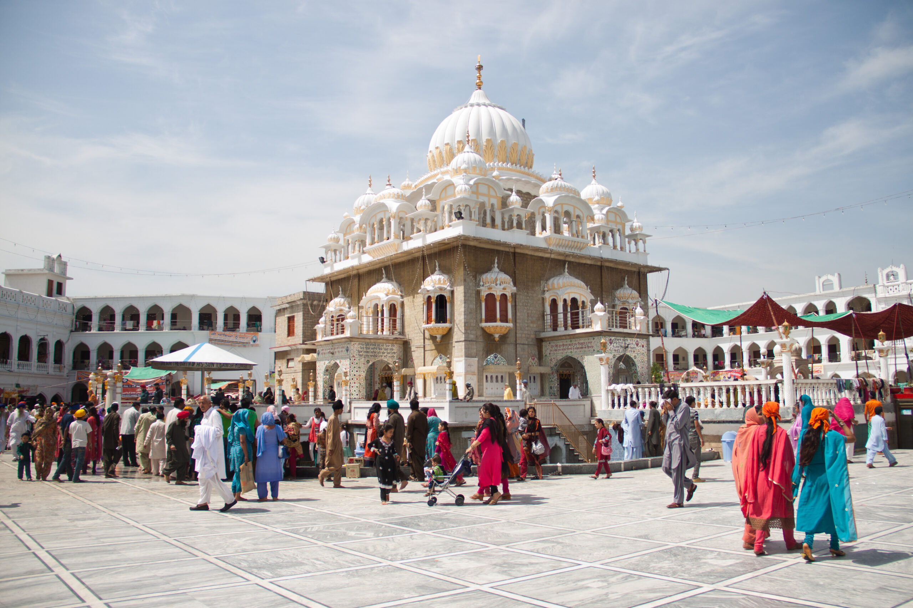

<div class="portfolio-single-load clearfix">
    <div class="custom-full-width-box">
        <div class="custom-container">
            <div class="custom-row align-items-center">
                <div class="custom-image-column">
                    
                </div>
                <div class="custom-text-column">
                    <h2 class="custom-heading">Gurdwara Panja Sahib, Hasan Abdal</h2>
                    <p class="custom-paragraph">
                        Gurdwara Panja Sahib, located in Hasan Abdal, Pakistan, is renowned for the sacred imprint of Guru Nanak Dev Ji's hand on a boulder, believed to have been left during his travels. This historic event, dating back to the 16th century, holds immense significance for Sikhs, symbolizing Guru Nanak Dev Ji's blessings and divine presence. The gurdwara is a revered pilgrimage destination, attracting devotees seeking spiritual solace and blessings.

                    </p>
                </div>
            </div>
        </div>
    </div><!-- .custom-full-width-box end -->

</div><!-- end single-project -->
